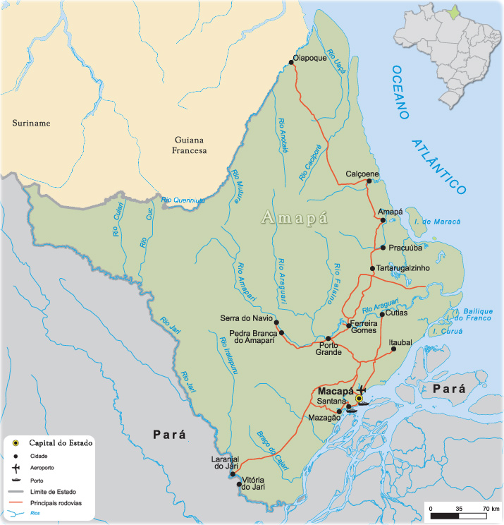
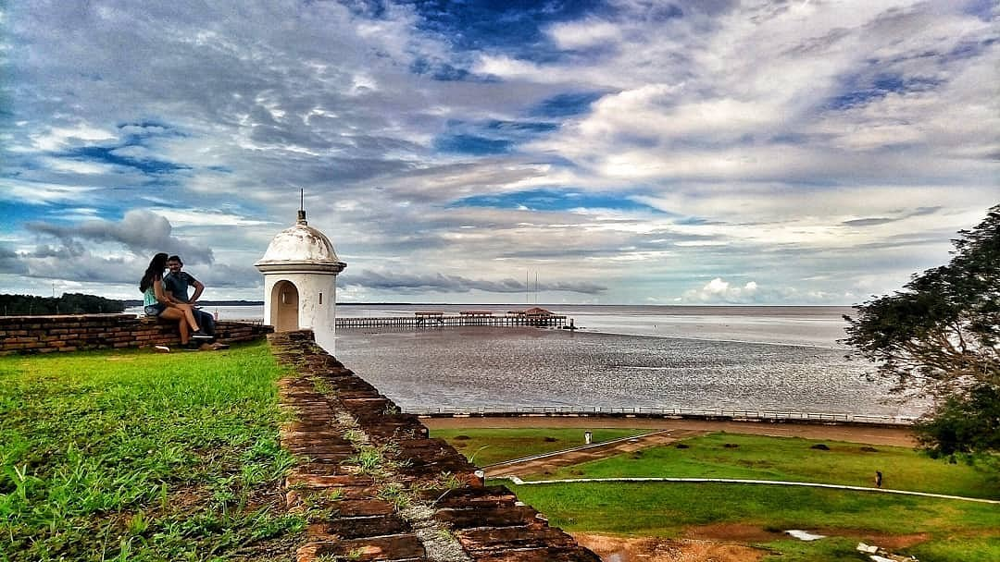

O estado do Amapá está situado na região Norte do Brasil e faz fronteira com a Guiana Francesa, o Suriname e o estado do Pará. Possui uma posição geográfica peculiar, pois é um dos poucos lugares do mundo cortados pela linha do Equador, o que confere grande relevância simbólica e turística à região. Administrativamente, é dividido em 16 municípios organizados em quatro regiões principais: Macapá, Mazagão, Oiapoque e Amapá. A capital, Macapá, concentra a maior parte da população e é considerada o centro político, econômico e cultural do estado, junto ao município de Santana, que forma com a capital a Região Metropolitana.
A população amapaense é de cerca de 733 mil habitantes, altamente urbanizada — mais de 90% vive em centros urbanos. A composição étnica predominante é parda, seguida por brancos, negros e indígenas. O estado abriga diversas comunidades tradicionais, incluindo quilombolas e aldeias indígenas que mantêm seus costumes e modos de vida. Apesar da população relativamente pequena, o Amapá é um estado jovem e com grande diversidade cultural, refletida em sua música, religiosidade e festas populares, como o marabaixo e o batuque, manifestações afro-amapaenses muito presentes no calendário cultural.

A economia do Amapá ainda é considerada modesta, com um Produto Interno Bruto (PIB) entre os menores do país. Seu principal setor é o de serviços, impulsionado pela administração pública e pelo comércio. A indústria tem participação significativa em Santana, especialmente no setor portuário, enquanto o setor primário se destaca pelo extrativismo de recursos naturais como madeira, manganês e ouro. A agricultura é baseada na produção familiar, com cultivos como mandioca, arroz, milho e castanha-do-pará, além da pesca artesanal de peixes amazônicos, como pirarucu e tambaqui.
O turismo no Amapá vem crescendo nos últimos anos, com destaque para atrações naturais e culturais. Entre os principais pontos turísticos estão o Marco Zero do Equador, onde é possível ficar com um pé em cada hemisfério, e a Fortaleza de São José de Macapá, uma construção histórica do período colonial. Áreas de conservação como o Parque Nacional do Cabo Orange e a Floresta Nacional do Amapá são procuradas por ecoturistas, pesquisadores e amantes da natureza. A gastronomia local, rica em sabores amazônicos, e o artesanato com influências indígenas e africanas, também contribuem para atrair visitantes e valorizar a identidade cultural do estado.